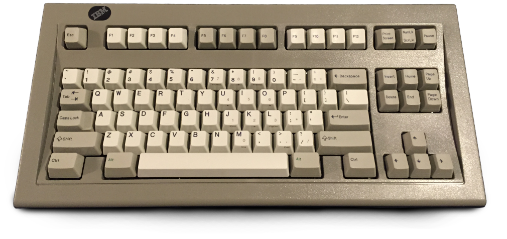

План
- Что можно улучшить
- История QWERTY
- Исследования расскадок
- Что попробовать кроме QWERTY
- Возражения
Что можно улучшить
- Оптимизировать расположение символов
- Ускорить обучение двум языкам
- Зафиксировать клавиши пунктуации между языками
- Упростить переключение между языками
Краткая история QWERTY
Американский инженер Шолес с коллегами создавал печатные машинки с конца 1860-х.

Технические ограничения того времени
- Важно сделать набор текста автоматическим
- Напечатанный текст можно увидеть, только провернув барабан
- Рычаги клавиш задевают друг друга и заклинивают
Сегодня QWERTY находится в суперпозиции. Она и жуткий анахронизм и
признанный стандарт.
Так исторически сложилось
- 1874, Remington No.1, первая коммерчески успешная
печатная машинка, которая представила QWERTY;
- 1961, IBM Selectric , влиятельная электрическая
машинка;
- 1985, IBM the Model M, компьютерная клавиатура
ставшая каноном.

Клавиши пунктуации


Исследования раскладок
Существующие исследования неубедительны в отношении того, действительно ли раскладки предлагают какие-либо реальные выгоды.
Что упускают исследования
- касаются ввода только на английском
- высокий порог вхождения
- коэффициент ошибок
- можно сохранить совместимость
- неудобная раскладка вредна
Тунельный синдром запястья
- Проявляется болью и онемением.
- Даже диагноз средней тяжести может поставить крест на карьере программиста.
- В группе риска женщины, сурдопереводчики, пианисты, барабаншики, художники, программисты, киберспортсмены.
Мартин Кривински, канадский ученый в области
биоинформатки.
Он создал математическую модель и клавиатурный
оптимизатор на ее основе — Carpalx. Оптимизатор призван
минимизировать усилия при печати и снижать напряжение на запястья.

Carpalx
С помощью Carpalx Мартин сопоставил существующие раскладки, а также сгенерировал оптимизированные раскладки.
2006 Colemak.

Русские раскладки
- Диктор и раскладка Зубачева
- Типографская раскладка Бирмана
- Мефодица
- Universal layout Никиты Прокопова
Английская — модернизированная QGMLWB
Русская — фонетическая QGMLWB
«Фонетическая» означает транслит английских букв на
русский
Дополнительные удобные модификации
- переключение языка на одну клавишу (напр. caps lock)
- переключение регистра на зажатый пробел
- backspace на Capslock + H
- «стрелочки» на Capslock + IJKL
- смена порядка функциональных клавиш: cmd, fn, ctrl, option (для Mac)
Не понимаю, зачем это мне?
Я попробовал и это очень неудобно!
Надписи на кнопках теперь все перепутаны!
Я не смогу работать на других компьютерах!
Всё нравится, но я хочу самостоятельно поэкспериментировать с этим.
Можно скачать Martynak или раскадку Никиты. Откройте в [Ukelele.app](http://scripts.sil.org/ukelele) и доведите до нужного состояния. Сделать это очень просто на Mac, чуть сложнее на Windows и несколькко проблематично на Linux.